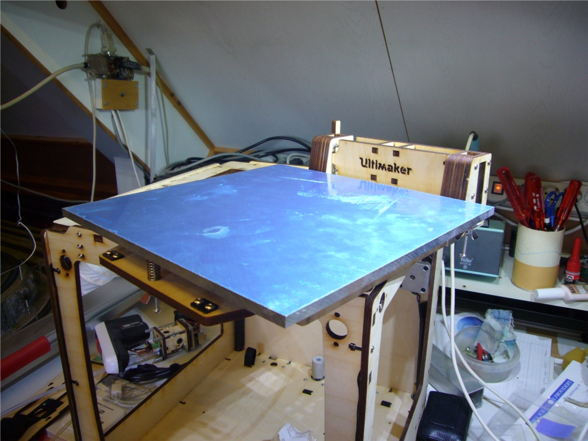
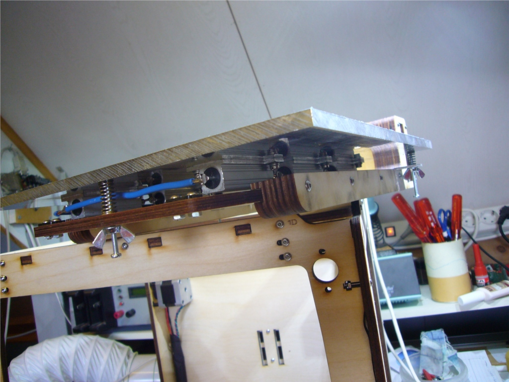
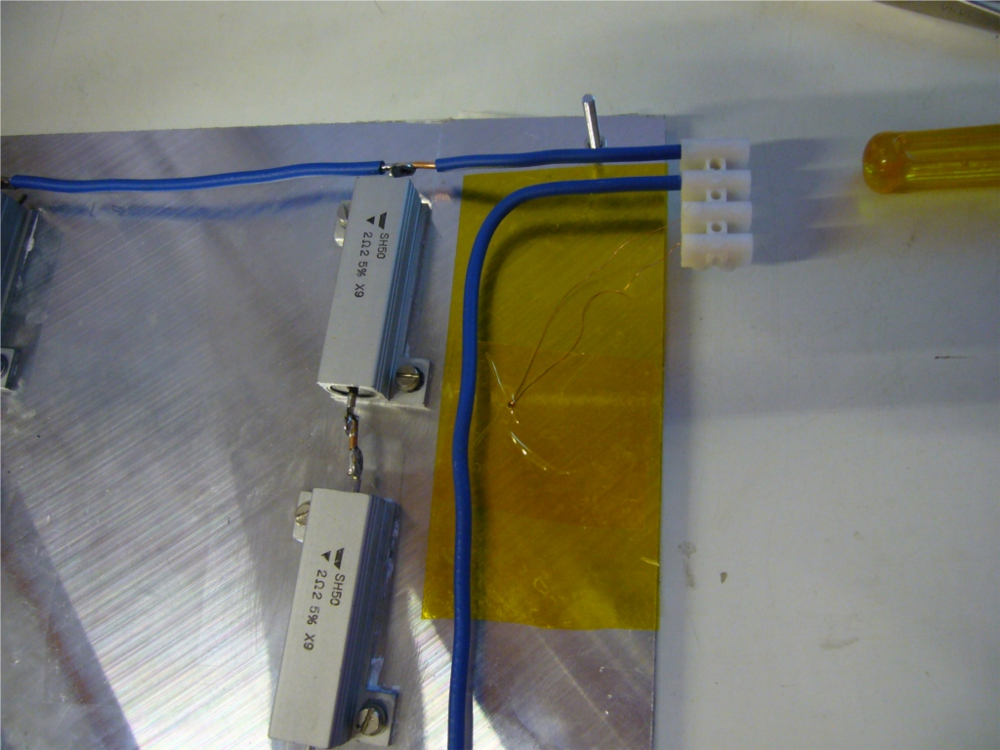
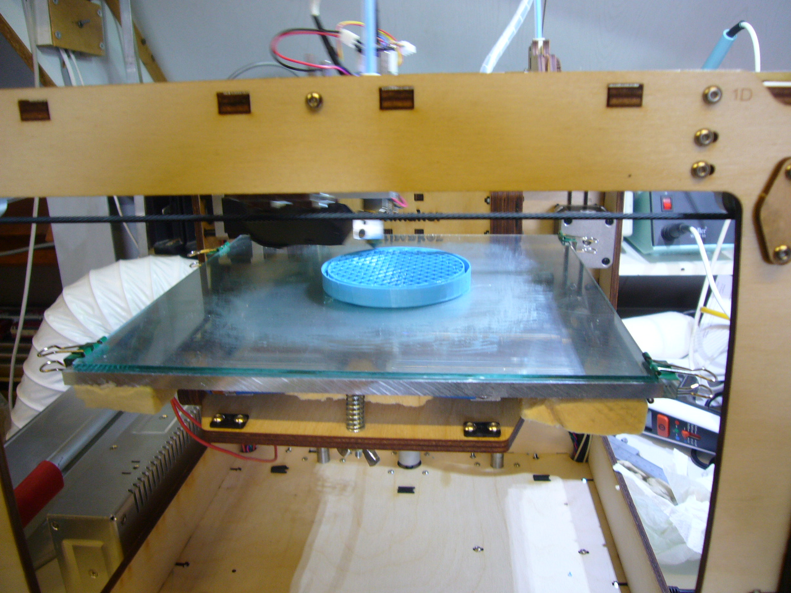
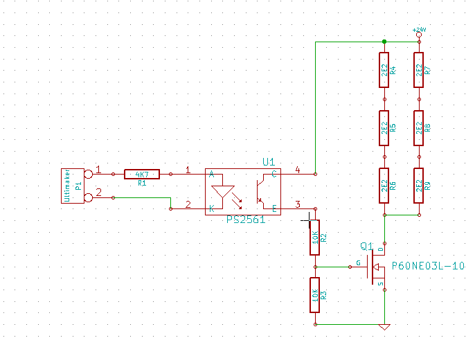
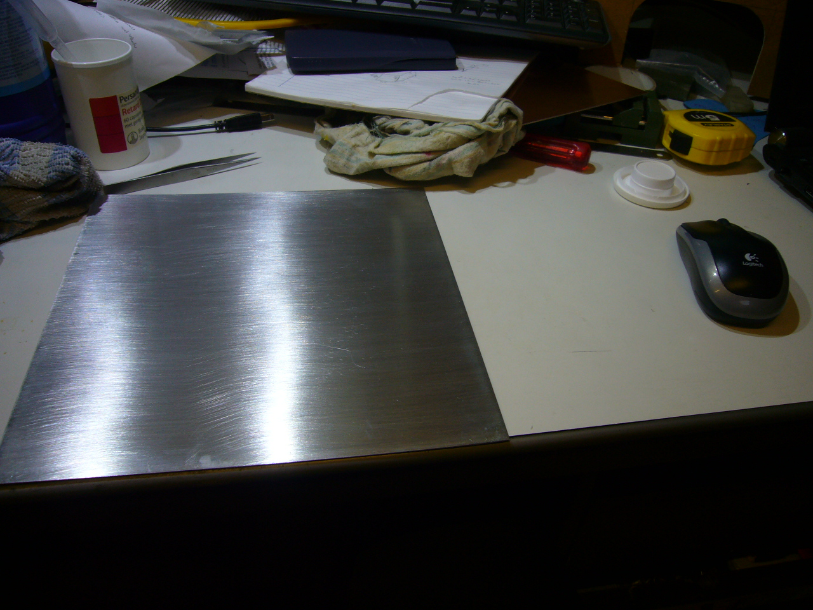
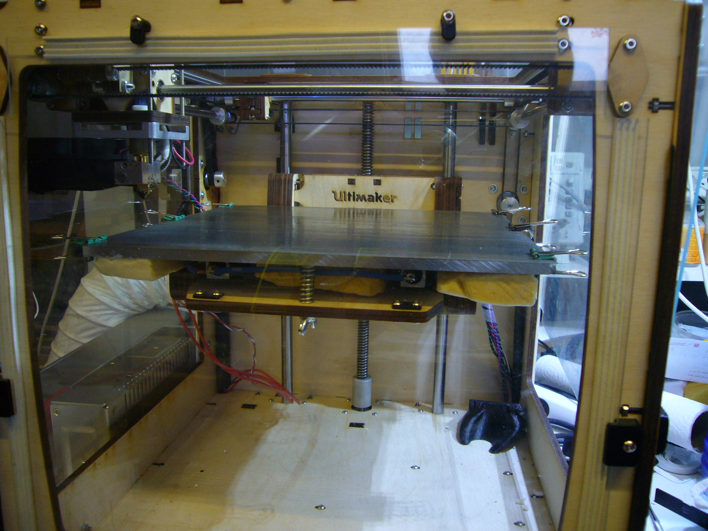
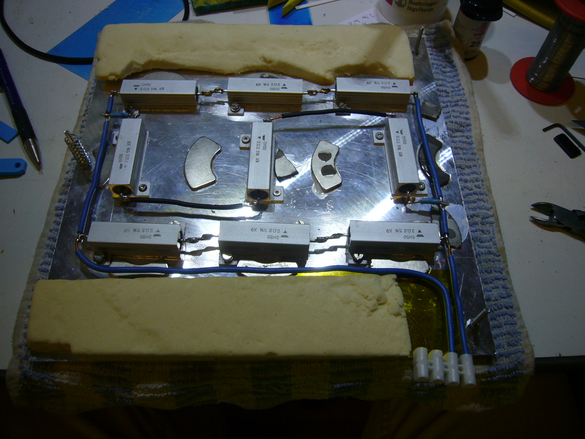
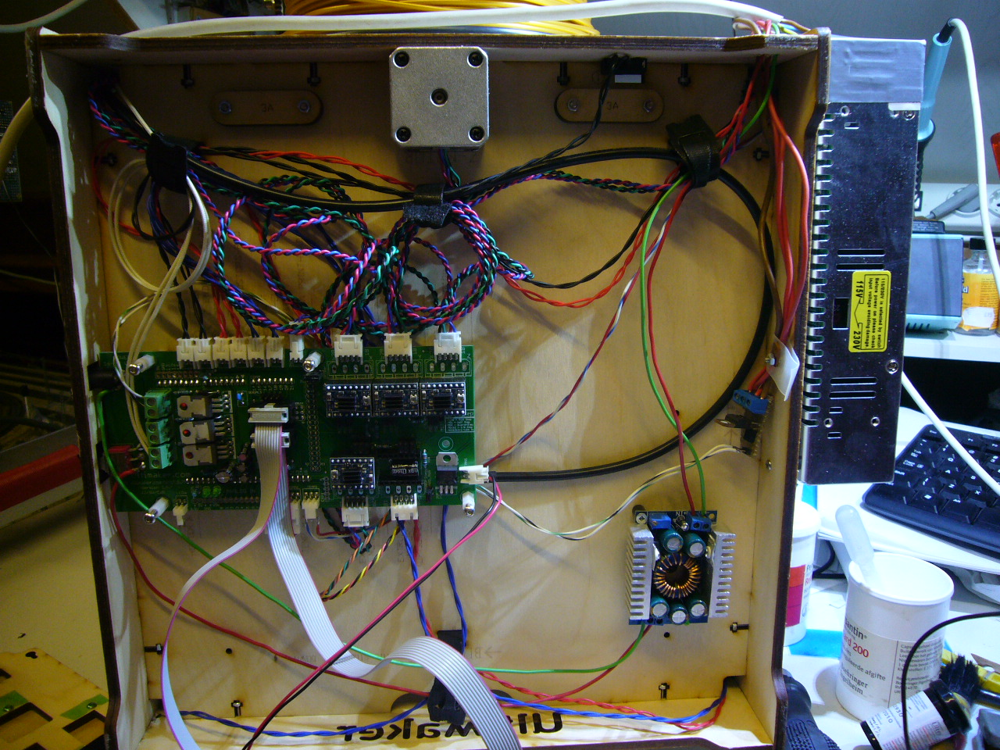
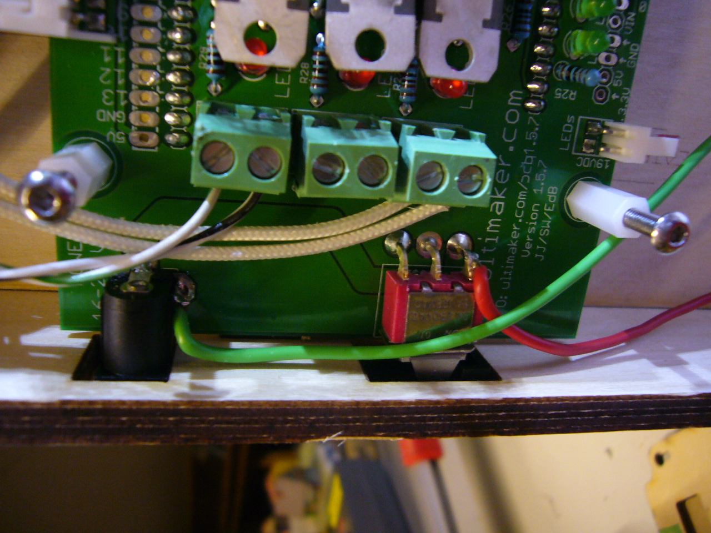

Heated printer platform
While waiting for my new frontpanel I started assemling a heated platform. I already arranged a nice
6mm 245x245mm aluminium by a local metal company. It is similar as the MIC-6
plate. This is difficult to get in The Netherlands you would have to look
for EN AW 5083 or AlMg4.5Mn. I use aluminum clad resistors (2 sets of 3x2.2
Ohm resistors) for heating and I found a 200W 24V power-supply. The
advantage of using resistors is that the value is reasonable constant and
they are cheap, PCB heaters have a low value when cold so you need more
power. It takes about 2 min to get to 50 degrees and about 25 min to 115
degrees. So that is a little slow. Below an image of the platform still with
the protective plastic covering.

I use 3 point leveling system. And I can remove the platform and still use
the original acrylic platform.

The 100K thermistor is mounted on the side on the bottom:

I connected my headed bed and added the 200W 24V PSU. Drilled some
holes to mount it on the side of the machine I reprogrammed the firmware
that I got via
robotfuzz
And had my bed running in one evening. After doing some test prints with a
metal sheet ontop of the aluminium I switched to glass. Debugged the initial
adhesion issues I started printing 'real' things.
Here you see the headed bed with glass on top in action printing a cap.

Instead of using a relay I used a MOSFET. I have seen quite some people having issues with the relais so I think
this is a better solution. Using a opto coupler also introduces some safety so there is no electrical interference
between the printer and the additional power supply. Here is the schematic

After printing some ABS parts (30-may-2014) I got problems with leveling. What ever I did the printbed was not level.
The chance that the aluminum plate is not flat was low so I checked the glas plate. And yes it is not
flat anymore it wrapped in the middle by about 2mm from one side to the other. So a 2mm glas plate is not
good enough. It can not withstand the 130 degrees from the build platform to get to the required 120 degree
glas temperature on the top. Too bad the PVA glue solution to the glas was so simple. So I started rework on
the metal sheet idea again that I disgarded. The 0.5mm sheet that I had was not flat anymore but way better
then the glasplate. Adhesion of ABS to metal is a problem. Most people put kapton tape on it but I wanted to
experiment printing without it. I tried a couple of things
- bare metal no good
- sanded with 320 no good
- sanded with 150 no good
- added PVA glue not so good the glue does not stick well enough
- sanded with 80 same result
- used sugar water better, adhesion of small parts seem ok
Due to the sanding with 80 paper the bottom side of the objects are a bit rough. Keeping the 0.5mm plate flat on the
aluminium is problematic. So I tried 0.2mm and some magnets. I had some strong harddisk magnets and they seem to
hold. This is what I currently use. A 0.2mm plate and sugar water. Lots of sugar in the water but still a watery solution.
Apply it well to get an even layer. Keep going up and down with the pencil until it gets hard to move it. At this stage
the sheet is very sticky. Here are the plates that I use

And here is the platform ready for the next print

(July 7th 2014 )
I added some more magnets to the bottom of the build platform. This to keep the plate down. It tended to have some slag in the middel. I took
the magnets from old harddisks...

I have replaced the power supply with a 24V 400W version. I added a extra set of 3 resistors to the bed so now I
put about 240W of power in the bed and it heads up to 115 degrees in about 11 minutes. On low temperatures about 50 degrees I do
have a initial overshoot of about 4 to 5 degrees due to the increased power. I selected a little bigger power supply so I can also power
the UM with it. For that I bought a small dc dc converter to convert the 24V to 19V (about 100W) which is used for the UM. Some people try
to run it directly from 24V but you have to replace the 12V converter on the bord and the ventilor and heater of the hotend would
also be effected. Here is foto of the electronics at the bottom:

This is how I connect the 19V to the printer board.

Now I can operate the printer with 1 power supply only.